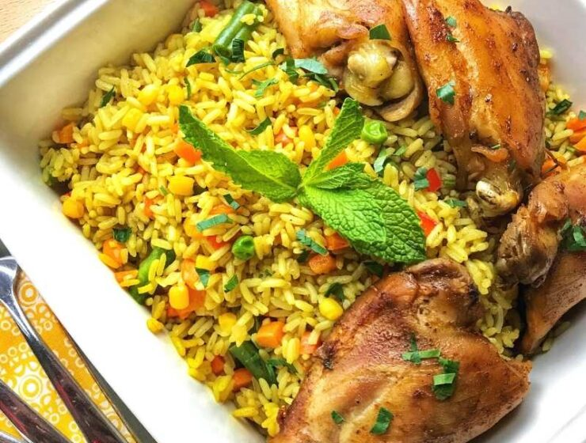

A Plate of Fried Rice
Nigeria Fried rice Served alongside chicken, it is really delicious.The spicy flavours will have
you at the first bite.
Ingredients
- 2 cups of rice
- 1 small cabbage
- 1 large onion
- Half cup of green peas
- 4 large carrots
- 4 chicken thighs
- Groundnut Oil
- 1 table spoon of curry powder
- Seasoning and salt
Steps
- Wash and spice the chicken pieces. Boil until soft then fry.
- Chop the carrot, cabbage,and green beans.
- Parboil the rice, then cook in the chicken(add 2 extra cups of water)
- Put a clean frying pan on fire. Add groundnut oil and onion to the pan. Stir for a minute then add the
carrot and green beans. Stir for another minute
- Add other cabbage, curry, seasoning and salt to taste. Stir-fry for two minutes
- Time to add the rice, stir and simmer for 5-7minutes. Serve with Chicken